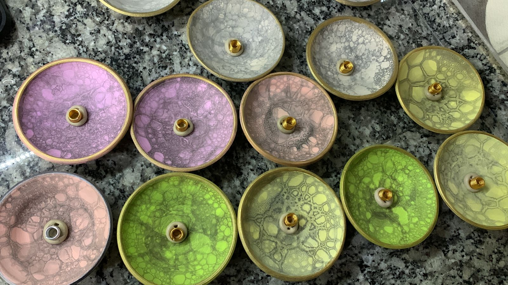

Porta Sahumerios de Cerámica
Nuestros porta sahumerios de cerámica son el complemento perfecto para disfrutar de tus sahumerios favoritos con estilo y seguridad. Diseñados para adaptarse a distintos tipos de sahumerios, son piezas decorativas que añaden un toque de armonía a cualquier espacio. ¡No te lo puedes perder!
Disponibilidad de Colores:
Debido a la naturaleza artesanal y la rotación constante de nuestro stock, los colores específicos de los porta sahumerios disponibles se informarán al momento de realizar tu pedido. ¡Contáctanos para conocer las opciones del momento!